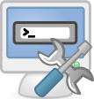

It looks like you're using a browser that does not support CSS - why don't you upgrade to a totally free new browser like Firefox?
The Usage Guide

If you want to start modding using Corsix's Mod Studio then this guide will guide you through the essential basics. Once you've gone through the three areas below, you'll be ready to start modding. You'll also be ready to read tutorials on how to do certain tasks.Getting Started

The Files List

Unit Stats Editing
The easiest thing to do first is to play around with the RGD files. These files hold all of the unit, building, vehicle, etc. stats. (RGD editing is also called LUA editing, as RGDs can be converted back and forth from LUA).
This documentation is provided under the GNU General Public License. All trademarks / copyrights are tm/r/c their respective owners.